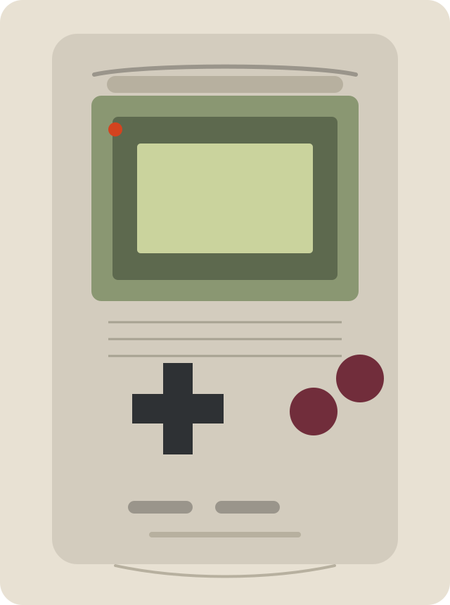

1998 / translucent color shell
TACTILE
HISTORY.
A curated journey through the handheld devices that turned gaming into a personal object. Discover the milestones that moved play from monochrome endurance to hybrid freedom.
Swiss order. Museum restraint. Apple-style focus. The object stays central, while the interface recedes into tonal surfaces, glass layers, and editorial pacing.
Explore the chronology1989

1989
Nintendo Game Boy / monochrome endurance
Nintendo Game Boy
Portable, defined.
Discover the gray artifact that turned gaming into a journey you could carry.
Key highlight Long battery life made handheld play truly everyday.
Its monochrome screen and durable body made portability practical, not experimental. This is the object that moved games from the living room into daily life.
Scarcity Clean screens, intact battery contacts, and preserved early cartridges are increasingly harder to discover in the archive.
Game Boy Color
Color, carried.
Explore the moment handheld worlds stepped out of green haze and into a brighter journey.
Key highlight Full color refreshed a classic form without losing portability.
It kept the Game Boy line familiar while making game worlds feel more immediate and alive. This room marks the shift from endurance alone to visual expression.
Scarcity Fading translucent shells, battery corrosion, and disappearing boxed units make strong survivors rarer every year.
Game Boy Advance
Power, widened.
Continue the journey into a slimmer handheld built for broader ambition.
The landscape orientation marks the shift from toy-like portability to a more deliberate piece of personal technology.
2001
Key highlight 32-bit performance brought console-scale design into the palm.
The horizontal form and stronger hardware expanded what portable games could look and feel like. It stands as the point where handheld design became sharper, faster, and more assured.
Scarcity Bright original screens, uncracked shells, and preserved cartridge libraries are harder to explore intact now.
PlayStation Portable
Media, in motion.
Sony recast the handheld as a polished media object, making the portable journey feel cinematic and aspirational.
Discover a handheld that invited visitors to explore games, music, and film through one polished object.
Key highlight A widescreen display made handheld entertainment feel cinematic.
The PSP pushed portability toward multimedia luxury, with a form closer to premium electronics than toys. In museum terms, it captures the moment handhelds chased a broader media identity.
Scarcity Scratched screens, fragile disc drives, and vanishing UMD media make well-kept systems increasingly scarce.
Nintendo DS / dual-screen curiosity
Nintendo DS
Touch changes everything.
Explore the handheld that split the screen and reopened the journey through play.
Key highlight Dual screens and touch control changed how portable games were imagined.
The DS broke the familiar handheld template and made interaction itself the exhibit. It opened a new design path through touch, asymmetry, and experimentation.
Scarcity Intact hinges, original styluses, and preserved dual-screen hardware are steadily disappearing from the archive.
Depth, revealed.
Journey into a device that asked players to discover portable space without glasses.
Key highlight Glasses-free 3D made depth part of the handheld experience.
The 3DS extended Nintendo's experimental line with spatial display, cameras, and a stronger digital identity. It represents a bold attempt to make handheld play feel dimensional and new again.
Scarcity Aging batteries, worn circle pads, and delisted digital history make complete surviving systems more limited over time.
Nintendo Switch
The hybrid future.
Explore the device that turned the journey between handheld and home into one continuous motion.
Key highlight Dock-to-hand play redefined what portability could mean.
The Switch collapsed the old divide between portable system and living-room console. As an exhibit, it marks the modern moment when flexibility became the central design idea.
Scarcity Early launch units, intact Joy-Con hardware, and limited physical editions are already becoming the harder pieces of the modern archive.
The collection continues.
The current chronology isolates the major milestones. Future rooms will explore preservation, regional variants, and the systems that became rare at the edges of the archive.
Return to the foyer